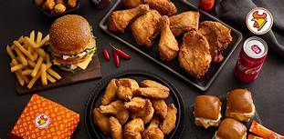
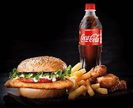

CHICKEN LICKEN
Chicken Licken is a South African fast-food fried chicken restaurant chain. The company had a 5% share of South Africa's fast food market in 2010, tying with McDonald's. According to a case study published by the Henny Penny Corporation in 2011, Chicken Licken is the "largest non-American-owned fried chicken franchise in the world".Branding Grand Parade, Cape Town In 1981 Sombonos set up Golden Fried Chicken (Pty) Ltd and registered the trading name Chicken Licken, one of the names of the Henny Penny fable which was suggested by a waiter. The restaurants and packaging have been upgraded and the menu is updated annually, but the company logo has remained unchanged since 1981. Chicken Licken's products cater to the tastes of the local population. The company's most popular product is its hot wings introduced in 1992. Registered trademarks in South Africa include: Soul Food Full house Hot wings Popcorn Chicken Golden Fried Chicken (Pty) Ltd, trading as Chicken Licken, owns the trademark for the word soul in South Africa with respect to "restaurants, snack bars, cafes, fast food outlets, canteens and roadhouses; services connected with the sale and distribution of foodstuffs and refreshments; catering". Chicken Licken's food is positioned as a more affordable option than that of its main competitors in South Africa, KFC and Nando's.Chicken Licken was ranked second after KFC in the Fast Food and Restaurant Chains category of the Sunday Times Markinor 2007 Top Brands Survey, followed closely by Nando's which was ranked second in the previous year. The survey was based on consumer interviews and took into account factors such as brand awareness and trust.
